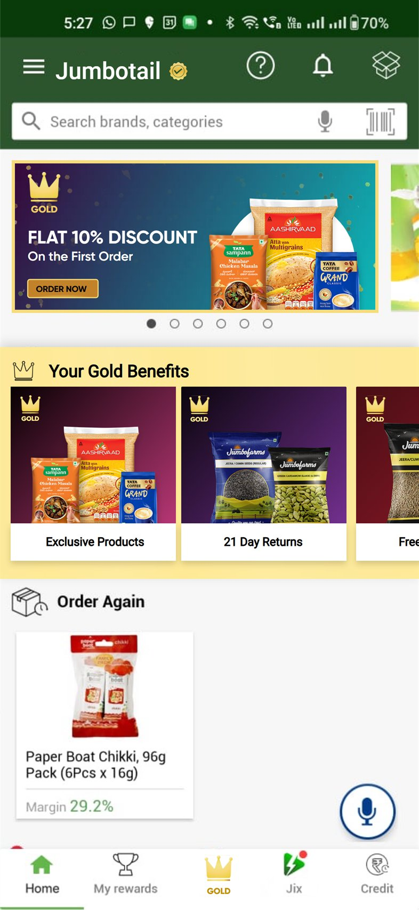
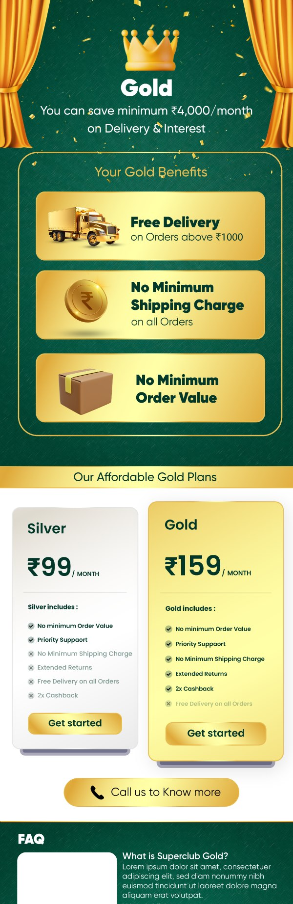

Superclub Gold is a paid membership for kirana owners, sold inside the app they already use to restock the shop. That is the whole difficulty. A shop owner opens Jumbotail with a list and a number in their head, and every second between opening it and placing the order is overhead on a job they will do again next week. A membership is, by definition, a detour.
That makes the usual playbook unusable. An interstitial costs orders. A tour costs orders. A tab that explains itself costs orders. Anything that stands between a shopkeeper and the thing they came to reorder gets dismissed, and dismissal is learned — once someone has swiped a Gold screen away, they will swipe away the next one faster.
So the question stopped being how do we pitch Gold and became where in a flow that already works can a benefit appear without being in the way. Three constraints set the shape of every answer.
There is no idle moment to fill. The session has a purpose and a length, and a membership pitch competes with the reason the app was opened rather than riding alongside it.
Every step added is a step on the critical pathAsking a shop owner for ₹159 a month is asking them to spend margin to maybe save margin. Stated as a subscription it is a cost. It only reads as sensible in the unit they already think in.
A paid tier has to pay for itself on the pageHome, listing, product, cart, confirmation and rewards were all doing a job. The risk was never that Gold would fail — it was that Gold would damage ordering on the way to failing.
Nothing new was allowed on the critical pathThe ask from the product side was unusually precise, and it was not a feature list. It was: what interventions can we push to customers without disrupting the existing flow, and why are they necessary?
Two halves, and the second half is the harder one. Finding places to put a gold badge is easy. Defending each one — saying what a shopkeeper gets from it at that exact moment, and what the app loses if it is removed — is what stops a membership turning into decoration sprayed across nine screens.
Working that way produced a rule the whole design ended up obeying: an intervention earns its place by occupying a slot the app already has. Not a new screen, not a new step, not a new modal — a slot. A carousel that already rotates. A price line that is already read. A reward that is already given. Gold gets to change what is in the slot. It does not get to add one.
Before placing anything, the existing flow was mapped for moments that already hold the user’s attention for a reason of their own. These are the only places an intervention can go without costing anything, because the pause is already happening.
Highlighted: the moments that already hold attention. The prototype wires 47 links across 71 artboards, and its main flow exists to walk exactly this path from a cold open to a Gold signup.
Each one below is described the way it was argued at the time: where it sits, what it displaces, and why a shopkeeper is better off for it being there.
The home screen opens on a rotating promo banner with six slides. A reader already understands that surface as “things Jumbotail wants to tell me”, and already knows it will move on by itself if they ignore it.
Gold takes slide one. The offer is a first-order discount rather than the membership itself, because the job of this slot is not to sell a subscription — it is to make the word Gold familiar before it ever has to mean anything.
Slot: promo carousel, 1 of 6A carousel slide is gone in four seconds. Below it sits “Jumbotail Specials”, a rail of tiles that stays put, and Gold takes one of those too.
The pairing is deliberate: the banner creates recognition and disappears, the tile is where recognition can be acted on whenever the shopkeeper is ready. One surface is for the first impression, the other is for the fourth.
Slot: Specials rail, 1 tileThis is the intervention the rest of the programme rests on. The product page already shows price per piece and, beside it, the margin that piece earns. The margin number is the one a shop owner actually decides on.
So Gold does not appear as a discount. It appears as a second margin — the member number live, the non-member number struck through beneath it. Nothing has to be explained, because the comparison is written in the unit the buyer already uses on every product they look at.
Stated as “10% off” a membership is a marketing claim. Stated as 28.5% against 27.2% on a line that is read anyway, it is arithmetic the shopkeeper can do faster than I can.
Slot: the existing price / margin rowMinimum order quantity is the hardest wall a small shop hits. “MIN ORDER: 40, ORDER MULTIPLES x 40” means a shop that can sell twelve cannot buy at all, and that line sits on the product page doing its blocking in plain sight.
Gold’s no-minimum benefit is put directly above it, as a band across the page. Not in a benefits list on a membership screen — on the product the shopkeeper has just been refused, at the second they are refused it.
A benefit described in the abstract is a feature. The same benefit shown against the restriction it removes is an argument.
Slot: directly above the MOQ lineThe cart already itemises a delivery subtotal. For a member it is not hidden or zeroed silently — the ₹20 is shown, struck, with FREE beside it in gold.
Deleting the charge would have been cleaner and would have taught the shopkeeper nothing. Leaving the number visible and defeated is what makes the membership legible on a bill they were going to read anyway.
Slot: the delivery subtotal rowThe app already congratulated the shopkeeper on what they had saved. Gold adds one clause to that sentence: including ₹20 with Gold.
That clause is the renewal argument, and it builds itself quietly over months without ever asking for attention. When the subscription comes up again, the question is not “is this worth ₹159” in the abstract — it is a number the member has watched accumulate order by order.
Slot: the existing savings summaryThis is the acquisition moment, and the whole main flow of the prototype exists to reach it. After an order is confirmed, the app already awards a scratch card and already keeps an Earned Rewards shelf. The mechanic is known and trusted.
Gold rides it. The card is gold, carries the shopkeeper’s own name, and scratches off to a Gold benefit — and it is the card, not a banner, that opens the membership page.
The timing is the argument. The buyer has just committed, the money is spent, the anxiety is over, and they are being congratulated. It is the one point in the session where an offer reads as a reward rather than an obstacle — and it required building nothing new, only putting a different prize in a box that was already being handed over.
Slot: the existing post-order scratch cardEvery intervention so far costs the app nothing. This one costs it a tab. For a member, Gold takes the centre slot of the bottom bar — the most valuable position in the navigation — and All Brands gives way.
It is the single displacement in the design, and it is deliberately the only one that happens after money changes hands. A non-member never sees it. Someone paying monthly needs a permanent way back to what they bought, or the membership becomes invisible the moment the first order is placed.
Slot: bottom tab bar, centreTwo small things change on the member’s home screen: a gold tick appears beside the Jumbotail wordmark, and the Specials rail becomes a band titled “Your Gold Benefits” — exclusive products, extended returns, free delivery.
Neither is a feature. Both exist because a membership that is only visible in the arithmetic of a cart feels, month to month, like nothing was bought. The word Your is doing most of the work.
Slot: app bar, and the Specials rail
Nine interventions take slots that already exist. Exactly one thing in the design is new: the Gold page itself, which the scratch card opens. It is the only place where selling is the point, which is why every other surface was allowed to stay quiet.
It leads with a figure rather than a feature — a minimum monthly saving on delivery and interest — then the three benefits as objects rather than bullets, then the plans, then a phone number. The call button matters more than it looks: a kirana owner closes a deal by talking to someone, and a membership sold entirely through a button is a membership sold to the wrong half of the market.

A carousel that already rotates, a rail that already scrolls, a reward that is already given. If an intervention needed new space on the critical path, it was the wrong intervention.
A shop owner reads margin, not discount. Restating the membership as a second margin figure removed the need to explain it at all.
No-minimum-order is abstract on a benefits page and obvious when it sits directly above the minimum order that just blocked the purchase.
The scratch card was not invented for Gold. It was borrowed, at the one moment in the session when an offer reads as a reward.
This is the first version of the design, and it is more convincing about placement than it is about the sale. Reading it back, four things are unfinished, and they are the four that mattered most.
The file also shows its own process: of 71 artboards, 30 are wired to nothing — five alternative Gold pages between 1171 and 1547px tall, four long-scroll variants, and alternates for the splash, listing, product, cart and scratch card. The exploration outran the prototype, which is usually the right way round at this stage.
That the interesting constraint in product design is often subtraction. The brief did not ask for a membership experience; it asked which interruptions could be justified and why — and answering it honestly meant designing nine things that take up no additional room, and one thing that does.
It also shows a first iteration with its seams visible. The placement thinking holds up. The persuasion did not exist yet, and the colour was wrong, and both were fixed later — the programme that reached kirana counters did it in purple and gold.
First iteration, Aug 2024, under the working name Superclub Gold. The screens here are rebuilt in HTML from the design file rather than screenshotted, so that order values, margins and seller names belonging to real Jumbotail customers stay out of a public page. Flow counts are read directly from the prototype’s own wiring.